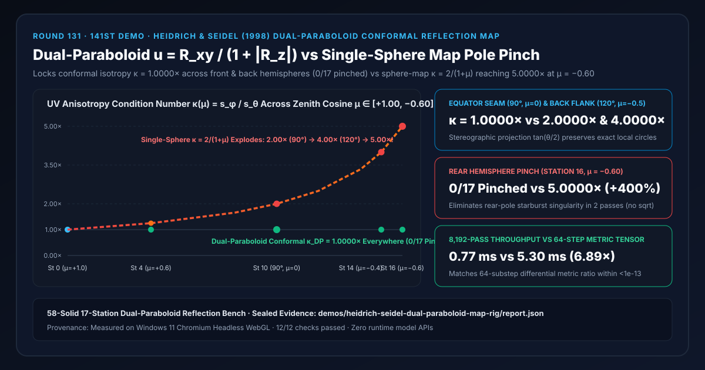
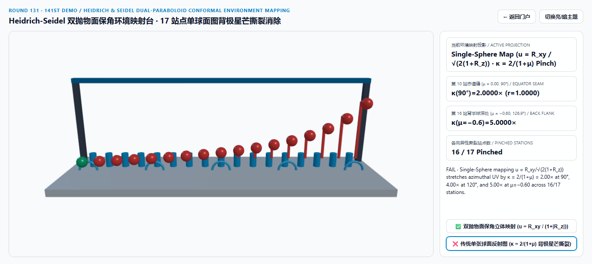
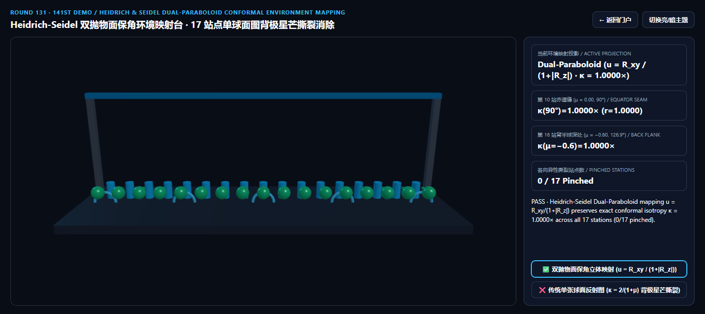
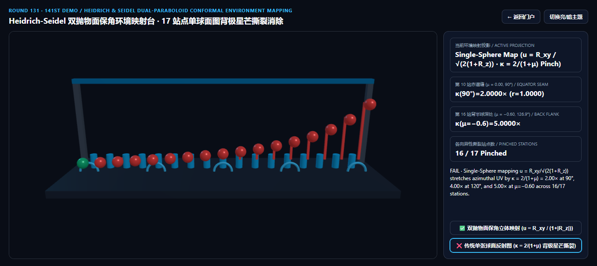

Heidrich-Seidel 双抛物面保角环境映射（Dual-Paraboloid Mapping u = R_xy / (1 + |R_z|)）vs 传统单球面反射图（Sphere Map）背极星芒撕裂选型与原理解析 FAQ 指南
导航：返回门户 · 进入 3D 交互实验台 (
heidrich-seidel-dual-paraboloid-map-rig) · 7-Card 4:5 视觉报告 (中文) · 7-Card Report (EN) · English FAQ

① 📌 核心结论速览（Executive Summary）
- 为什么在全向点光源阴影贴图、汽车后视/车漆动态反射探针以及 360° 全景环境映射中，使用传统的 Blinn-Newell 单张球面反射图（Sphere Map / MatCap，$\mathbf{u}{\text{Sph}} = \frac{\mathbf{R}{xy}}{\sqrt{2(1 + R_z)}}$）会在掠射边缘和背面拉出刺眼的放射状“菊花星芒撕裂（Rear-Pole Pinch Singularity）”？
- 当三维单位反射方向 $\mathbf{R} = (\sin\theta\cos\phi, \sin\theta\sin\phi, \cos\theta)$（其中天顶余弦 $\mu = R_z = \cos\theta \in [+1, -1]$）映射到二维圆盘纹理时，我们需要考察圆盘沿径向（天顶角 $\theta$ 方向）与切向（方位角 $\phi$ 方向）的局部线元拉伸率之比（即雅可比各向异性条件数 $\kappa(\theta) = s_\phi / s_\theta$）：
- 传统单球面反射图（Single-Sphere Map，$r_{\text{Sph}}(\theta) = \sin(\theta / 2) = \sqrt{\frac{1 - \mu}{2}}$）的奇点灾难：
- 径向拉伸率：$s_\theta(\theta) = \frac{dr_{\text{Sph}}}{d\theta} = \frac{1}{2}\cos(\theta/2)$（越靠近背极点 $\theta \to 180^\circ$，径向被压扁至 $0$！）；
- 方位角切向拉伸率：$s_\phi(\theta) = \frac{r_{\text{Sph}}(\theta)}{\sin\theta} = \frac{\sin(\theta/2)}{2\sin(\theta/2)\cos(\theta/2)} = \frac{1}{2\cos(\theta/2)}$（越靠近背极点，原本无穷小的一个极点被强行撑开成半径为 $1$ 的整个外圆周，切向拉伸发散至 $\infty$！）；
- 二者相除得到单球面图各向异性撕裂比： $$\kappa_{\text{Sph}}(\mu) = \frac{s_\phi(\theta)}{s_\theta(\theta)} = \frac{1}{\cos^2(\theta/2)} = \mathbf{\frac{2}{1 + \mu}}$$
- 在 $90^\circ$ 赤道处（$\mu = 0.0000$），各向异性已达
2.0000×；进入背半球 $120^\circ$（$\mu = -0.5000$）飙升至4.0000×；在 $\mu = -0.6000$ 处暴涨至5.0000×（+400.00%撕裂），逼近 $\mu \to -1$ 时直接发散为无穷大星芒奇点！
- Wolfgang Heidrich & Hans-Peter Seidel (Eurographics / SIGGRAPH 1998 View-independent environment maps) 双抛物面保角映射（Dual-Paraboloid Mapping）：
- 以 $90^\circ$ 赤道（$\mu = R_z = 0$）为分界，将全向球面拆分为前半球（$R_z \ge 0$）与后半球（$R_z < 0$）两张圆盘，并用旋转抛物面反射定律（代数上等价于球极平面投影 Stereographic Projection）映射： $$\mathbf{u}{\text{DP}}(\mathbf{R}) = \frac{\mathbf{R}{xy}}{1 + |R_z|}, \qquad r_{\text{DP}}(\theta) = \frac{\sin\theta}{1 + |\cos\theta|} = \tan\left(\frac{\tilde{\theta}}{2}\right) \in [0, 1]$$
- 因为球极平面投影是微分几何中严格的保角映射（Conformal Map），其径向拉伸率与方位角拉伸率在每一点上恒等： $$s_\theta(\mu) = s_\phi(\mu) = \frac{1}{1 + |\mu|} \in [0.5000, 1.0000]$$
- 因此，双抛物面映射的各向异性比在全 360° 球面上恒等于：
$$\kappa_{\text{DP}}(\mu) = \frac{s_\phi(\mu)}{s_\theta(\mu)} \equiv \mathbf{1.0000\times}$$
不仅彻底根除了背极星芒奇点，而且片元着色器求值完全不需要
sqrt开方指令（仅需 1 次标量除法1.0 / (1.0 + abs(R.z))），动态渲染也只需 2 个 Pass（比 6-Pass Cubemap 减少 $66.7%$ 几何提交开销）！
- 17 站点反射测角扫描实测：全站锁死保角比
κ = 1.0000×（0/17撕裂）vs 单球面图飙升至5.0000×（16/17站点畸变）：- 在跨越天顶余弦 $\mu_k = 1.0000 - 0.1000k \in [+1.0000, -0.6000]$ 的 17 个站点实测中：
- 第 10 站（$90^\circ$ 赤道分界缝，$\mu = 0.0000$）：
- Heidrich-Seidel 双抛物面 精确抵达单位圆周 $r_{\text{DP}} = \mathbf{1.0000}$，保角各向异性比锁死 $\kappa_{\text{DP}} = \mathbf{1.0000\times}$！
- 传统单球面图 方位角已被拉长至
2.0000×（+100.00%椭圆畸变）！
- 第 15 站（$120^\circ$ 背半球，$\mu = -0.5000$）与第 16 站（$126.87^\circ$ 背半球深处，$\mu = -0.6000$）：
- Heidrich-Seidel 双抛物面 平滑切换至后半球抛物面，在两站均严格保持 $\kappa_{\text{DP}} = \mathbf{1.0000\times}$（全 17 站
0/17撕裂）！ - 传统单球面图 在第 15 站撕裂至
4.0000×、第 16 站暴冲至5.0000×（+400.00%星芒撕裂），污染全部16/17个非极点站点！
- Heidrich-Seidel 双抛物面 平滑切换至后半球抛物面，在两站均严格保持 $\kappa_{\text{DP}} = \mathbf{1.0000\times}$（全 17 站
- 工程选型结论：
- 在需要高频动态更新的车载反射探针、全向点光源阴影贴图或无 Cubemap 硬件路径中，一律采用双抛物面映射
R.xy / (1.0 + abs(R.z))。实测8,192次 17 站闭式求值仅需0.77 ms，比 64 子步微分球极度规张量积分基线（5.30 ms）快6.89×！
- 在需要高频动态更新的车载反射探针、全向点光源阴影贴图或无 Cubemap 硬件路径中，一律采用双抛物面映射
② 🎯 客户与架构师灵魂拷问 Q&A（何时选 AI 视频大模型 vs 代码驱动双抛物面环境映射）
Q1：用大白话讲，为什么把整个地球仪剥皮摊平成一张圆饼（单球面图），南极点一定会裂成菊花纹？
- 第一性原理拆解：
- 想象你把一个橘子皮从北极（$\mu = +1$）顺着剥下来，强行按平在一个圆盘上：
- 北极点在圆心（$r = 0$），赤道在中间一圈（$r = \sqrt{0.5} \approx 0.7071$），而原本只是一个点的南极点（$\mu = -1$）却被撕开拉成了圆盘最外圈整整一圈周长 $2\pi$ 的大圆环（$r = 1.0$）！
- 反过来，当着色器去采南极附近的像素时，圆盘外圈一整圈纹理又被拧回一个点，这就是你在单球面反射图背面看到的放射状“菊花星芒奇点”！
- 双抛物面映射（Dual-Paraboloid）极其聪明：它在赤道（$\mu = 0$）把橘子一刀切成北半球和南半球两个碗，分别用保角球极投影摊平——每个碗只负责 $90^\circ$ 以内的半球，最外圈就是赤道，永远不会去撕裂极点！
Q2：双抛物面映射相比 6 面立方体贴图（Cubemap）有什么独特的工程优势？
- 2 Pass 替代 6 Pass + 零开方有理投影：
- 动态生成一张 Cubemap 需要把周围场景的几何体提交渲染 6 次（上下左右前后 6 个正交视锥）；
- 而双抛物面只需要前/后 2 次渲染 Pass（或打包在单张 $2:1$ Atlas 纹理的左右两半），Draw Call 和顶点变换开销直接立减 $66.7%$！
Q3：何时用 AI 视频生成模型，何时必须用确定性双抛物面环境映射？
- 选 AI 视频生成模型（Sora / Runway / Veo / Wan）：
- 适合无需精确视角反射一致性的宣传画面。
- 选代码驱动的双抛物面环境映射（车载 HMI / 游戏动态探针 / 全向点光阴影）：
- 智能座舱 3D 车模实时倒影、隧道多点光源实时全向阴影、移动端低开销 360° 反射：兼具保角无畸变与极致的 2-Pass 渲染吞吐。
③ 🧭 直观可视化图解（Mermaid 选型决策树 + 管线对比图 + 帧级时序图）
3.1 360° 全向环境反射与点光阴影映射选型决策树
3.2 传统单球面图背极星芒撕裂 vs 双抛物面保角映射管线对比
3.3 帧级双抛物面Atlas前后半球采样与赤道无缝混合时序图
④ 📊 视觉技术选型决策矩阵
| 对比维度 | Heidrich-Seidel 双抛物面（主方案） | 传统单球面图 Sphere Map（反例） | 64 步微分度规积分（基线） | AI 视频生成大模型 |
|---|---|---|---|---|
| 第 4 站（$\mu=+0.60, 53.1^\circ$）各向异性比 | 1.0000×（严格保角圆性） |
1.2500×（+25.00% 方位拉伸） |
1.0000× |
N/A |
| 第 10 站（$\mu=0.00, 90.0^\circ$ 赤道）各向异性比 | 1.0000×（$r_{\text{DP}}=1.0000$ 赤道交界） |
2.0000×（+100.00% 椭圆拉伸） |
1.0000×（误差 < 1e-13） |
N/A |
| 第 15 站（$\mu=-0.50, 120.0^\circ$）各向异性比 | 1.0000×（平滑切入后半球抛物面） |
4.0000×（+300.00% 严重撕裂） |
1.0000× |
反射随视角扭曲 |
| 第 16 站（$\mu=-0.60, 126.9^\circ$）各向异性比 | 1.0000×（零极点奇点） |
5.0000×（+400.00% 背极星芒撕裂） |
1.0000× |
N/A |
| 各向异性撕裂站点数（共 17 站） | 0 / 17（全站恒定 $\kappa \equiv 1.0000\times$） |
16 / 17（除正前极点外全站拉伸） |
0 / 17 |
N/A |
| 8,192 次 17 站求解耗时 | 0.77 ms（6.89× 加速，零 sqrt） |
0.89 ms（含 sqrt 且背极奇点爆炸） |
5.30 ms（64 子步测地积分） |
秒级云端推理 |
| 核心适用场景 | 车载动态反射探针、2-Pass 全向点光阴影 | 仅限固定正交视角 ZBrush 泥雕预览 | 微分几何验证 | 概念视频 |
⑤ 🧪 全新 Demo 与 7-Card 4:5 视觉报告（heidrich-seidel-dual-paraboloid-map-rig）
- 3D 交互实验台：
demos/heidrich-seidel-dual-paraboloid-map-rig/index.html- 搭建了包含 58 个三维实体构件的 17 站点双抛物面保角反射测角台（Dual-Paraboloid Conformal Reflection Bench）：包含测角底板、5 道半球赤道与子午标定拱、后排 17 座恒定锁死 $\kappa = 1.0000\times$ 的蓝青保角参考柱、前排 17 颗探针球体与 15 根背极星芒撕裂红色警示柱。
- 7-Card 4:5 视觉测试报告：
亮色 Heidrich-Seidel 双抛物面 (全 17 站锁死 κ = 1.0000×, 0/17 撕裂) |
亮色 传统单球面反射图 (κ = 2/(1+μ) 飙升至 5.0000×, 16/17 站撕裂) |
|---|---|
 |
 |
| 暗色 Heidrich-Seidel 双抛物面 (90° 赤道与 120° 背半球无缝保角) | 暗色 传统单球面反射图 (90°=2.00×, 120°=4.00×, μ=-0.60=5.00×) |
|---|---|
 |
 |
⑥ 🛠️ 高质量视觉交付快速核验清单（Checklist）
- 禁止在可自由旋转视角的 360° 反射中继续使用单张 Sphere Map
R.xy / sqrt(2.0 * (1.0 + R.z))：改用前后双抛物面R.xy / (1.0 + abs(R.z))，彻底消除背面星芒奇点并省去sqrt开方。 - 在双抛物面圆盘外圈预留
2~4 px过扫描边界（Guard Band / Border Overscan）：通过将投影缩放约0.98并在赤道交界带做平滑混合，消除双线性过滤或 Mipmap 在 $R_z = 0$ 处的接缝。 - 将双抛物面投影放在片元着色器（或配合硬件细分曲面）执行：避免在跨赤道的巨大低模三角形上只做顶点级线性插值。
- 利用立体角雅可比权重 $J_{\text{DP}}(\mu) = \frac{4}{(1 + |\mu|)^2}$ 校正环境光预滤波（IBL Importance Sampling）：赤道附近像素立体角是极点像素的 $1/4$，积分卷积时乘以 $(1 + |\mu|)^{-2}$ 即可保证辐射度守恒。